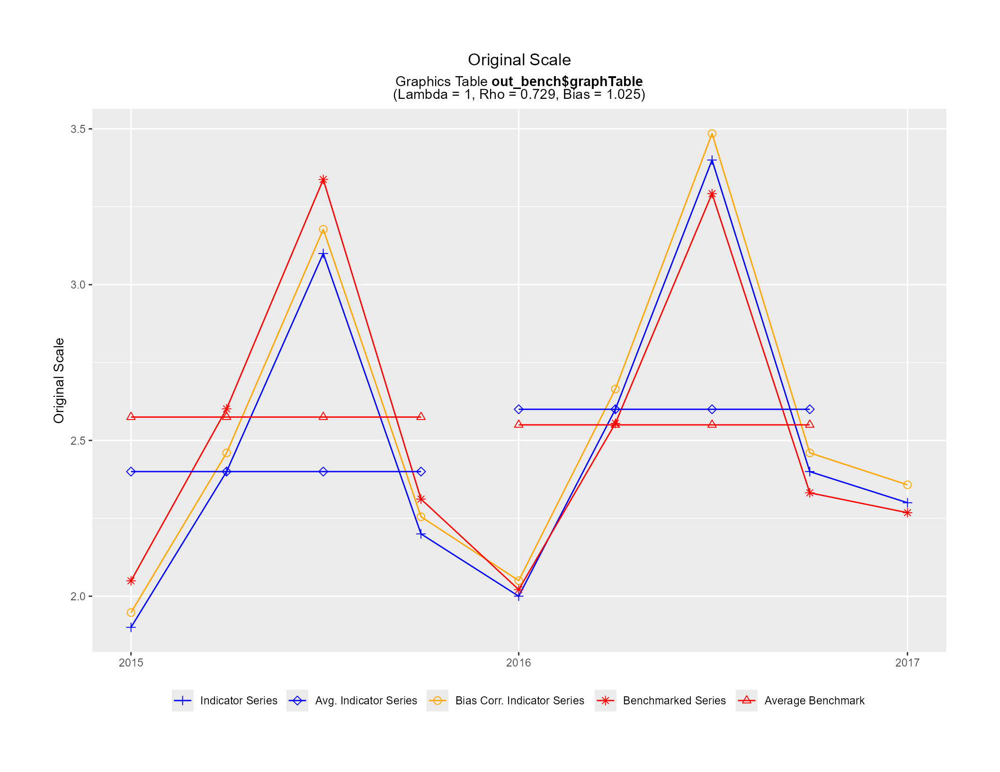
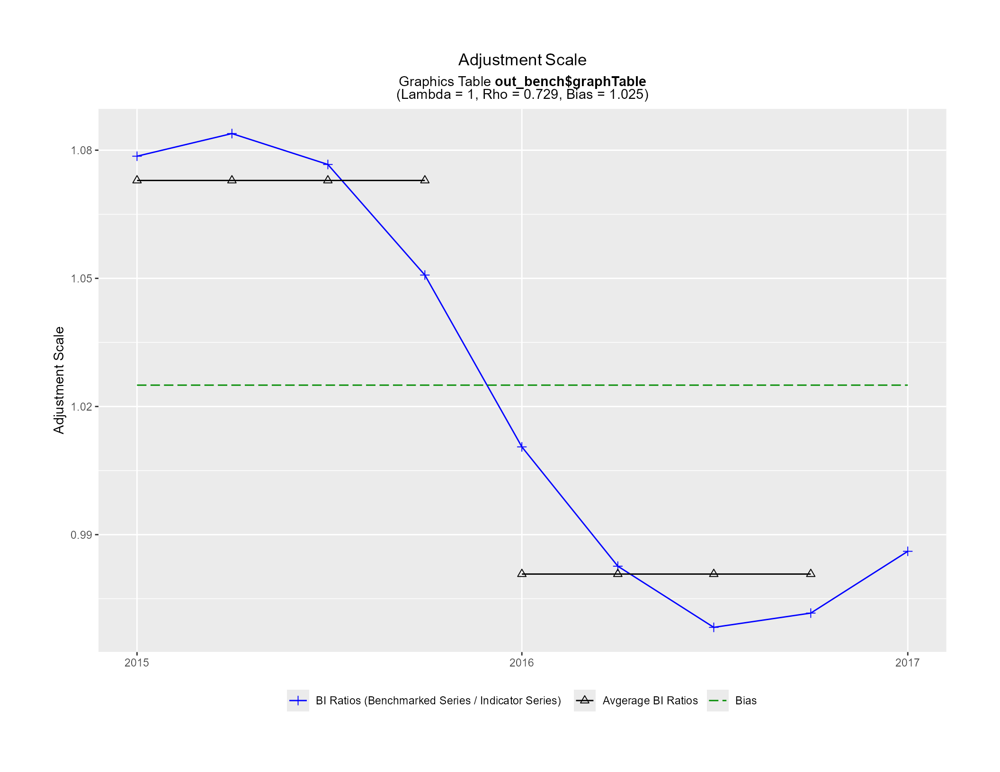
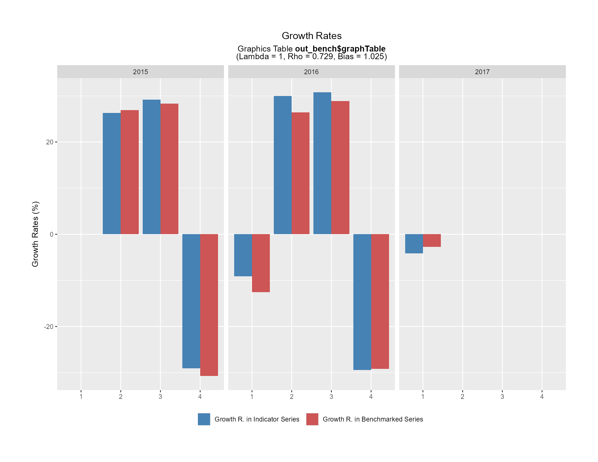
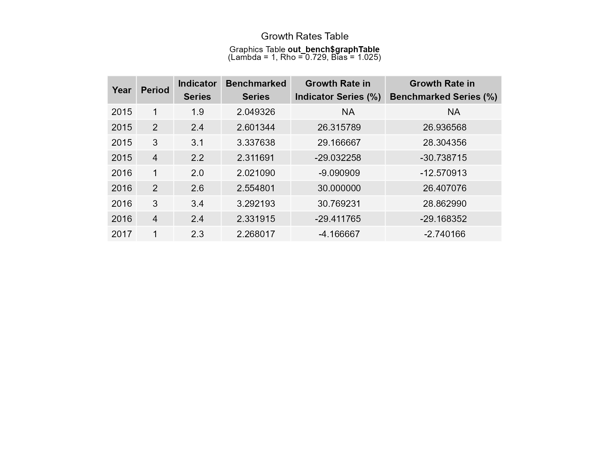
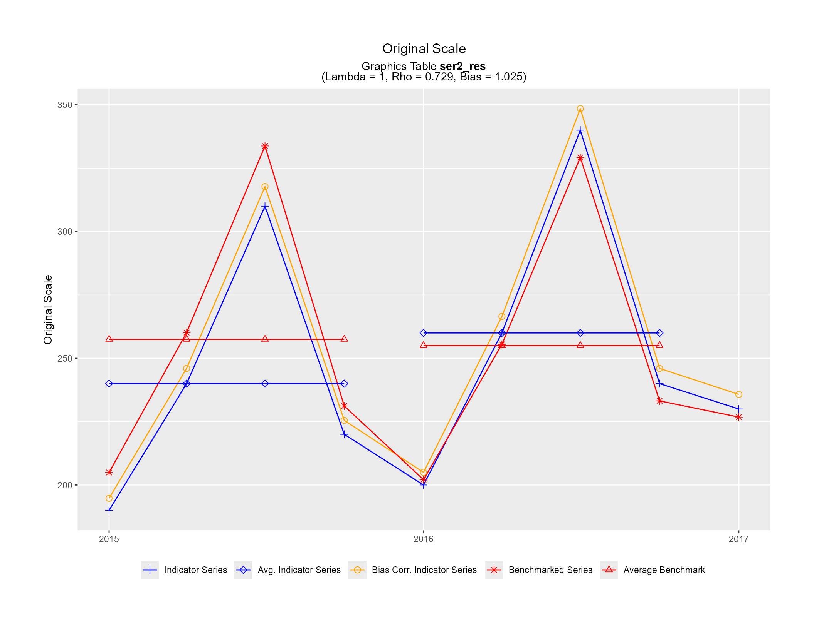
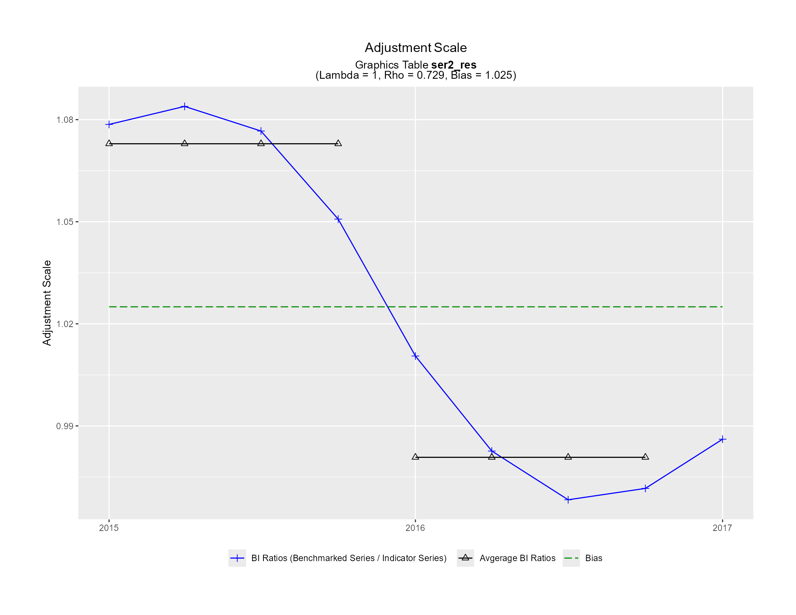
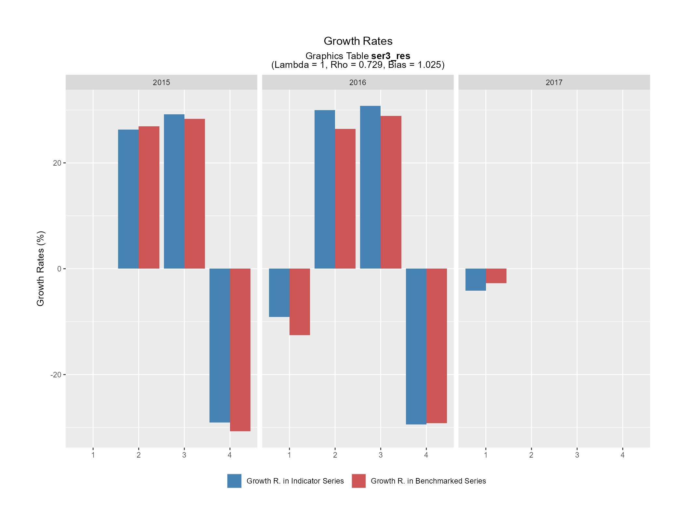

Functions used internally by plot_graphTable() to generate the benchmarking graphics in a PDF file:
ori_plot(): Original Scale Plot (plot_graphTable()argumentori_plot_flag = TRUE)adj_plot(): Adjustment Scale Plot (plot_graphTable()argumentadj_plot_flag = TRUE)GR_plot(): Growth Rates Plot (plot_graphTable()argumentGR_plot_flag = TRUE)GR_table(): Growth Rates Table (plot_graphTable()argumentGR_table_flag = TRUE)
When these functions are called directly, the graphTable data frame (argument graphTable) should only
contain a single series and the graphic is generated in the current (active) graphics device.
Usage
ori_plot(
graphTable,
title_str = "Original Scale",
subtitle_str = NULL,
mth_gap = NULL,
points_set = NULL,
pt_sz = 2,
display_ggplot = TRUE,
.setup = TRUE
)
adj_plot(
graphTable,
title_str = "Adjustment Scale",
subtitle_str = NULL,
mth_gap = NULL,
full_set = NULL,
pt_sz = 2,
display_ggplot = TRUE,
.setup = TRUE
)
GR_plot(
graphTable,
title_str = "Growth Rates",
subtitle_str = NULL,
factor = NULL,
type_chars = NULL,
periodicity = NULL,
display_ggplot = TRUE,
.setup = TRUE
)
GR_table(
graphTable,
title_str = "Growth Rates Table",
subtitle_str = NULL,
factor = NULL,
type_chars = NULL,
display_ggplot = TRUE,
.setup = TRUE
)Arguments
- graphTable
(mandatory)
Data frame, or object to be coerced to one, corresponding to the benchmarking function output graphTable data frame.
- title_str, subtitle_str
(optional)
Graphic title and subtitle strings (character constants).
subtitle_stris automatically built from thegraphTabledata frame contents whenNULLand contains thegraphTabledata frame name on the 2nd line and the benchmarking parameters on the 3rd line. Specifying empty strings ("") would remove the titles. Simple Markdown and HTML syntax is allowed (e.g., for bold, italic or colored fonts) thanks to the internal use of the ggtext package (seehelp(package = "ggtext")).Default values are
subtitle_str = NULLand a function specific string fortitle_str(see Usage).- mth_gap
(optional)
Number of months between consecutive periods (e.g. 1 for monthly data, 3 for quarterly data, etc.). Based on the
graphTabledata frame contents whenNULL(calculated as12 / graphTable$periodicity[1]).Default value is
mth_gap = NULL.- points_set, full_set
(optional)
Character vector of the elements (variables of the
graphTabledata frame) to include in the plot. Automatically built whenNULL. Seeplot_graphTable()for the (default) list of variables used for each type of graphic.Default values are
points_set = NULLandfull_set = NULL.- pt_sz
(optional)
Size of the data points shape (symbol) for ggplot2.
Default value is
pt_sz = 2.- display_ggplot
(optional)
Logical arguments indicating whether or not the ggplot object(s) should be displayed in the current (active) graphics device.
Default value is
display_ggplot = TRUE.- .setup
(optional)
Logical argument indicating whether the setup steps must be executed or not. Must be
TRUEwhen the function is called directly (i.e., outside of theplot_graphTable()context).Default value is
.setup = TRUE.- factor, type_chars
(optional)
Growth rates factor (1 or 100) and value label suffix ("" or "(%)") according to the adjustment model parameter \(\lambda\). Based on the
graphTabledata frame contents whenNULL(based ongraphTable$lambda[1]).Default values are
factor = NULLandtype_chars = NULL.- periodicity
(optional)
Number of periods in a year. Based on the
graphTabledata frame contents whenNULL(defined asgraphTable$periodicity[1]).Default value is
periodicity = NULL.
Value
In addition to displaying the corresponding graphic(s) in the current (active) graphics device (except when
display_ggplot = FALSE), each function also invisibly returns a list containing the generated ggplot object(s).
ori_plot()andadj_plot()generate a single ggplot object (single graphic) whileGR_plot()andGR_table()will often generated several ggplot objects (several graphics).The returned ggplot object(s) can be displayed manually with
print(), in which case the following ggplot2 theme updates (used internally whendisplay_ggplot = TRUE) are suggested:ggplot2::theme_update( plot.title = ggtext::element_markdown(hjust = 0.5), plot.subtitle = ggtext::element_markdown(hjust = 0.5), legend.position = "bottom", plot.margin = ggplot2::margin(t = 1.5, r = 1.5, b = 1.5, l = 1.5, unit = "cm"))
Details
See plot_graphTable() for a detailed description of the four benchmarking graphics associated to these
individual functions. These graphics are optimized for the US Letter paper size format in landscape view, i.e.,
11in wide (27.9cm, 1056px with 96 DPI) and 8.5in tall (21.6cm, 816px with 96 DPI). Keep this in mind when
viewing or saving graphics generated by calls to these individual functions (i.e., outside of the plot_graphTable()
context). Also note that GR_plot() and GR_table() will often generate more than one graphic (more than one
page), unless the number of periods included in the input graphTable data frame is reduced (e.g., subsetting
the data frame by ranges of calendar years).
Examples
# Deactivate the graphics device creation for the pkgdown website HTML reference page
# (irrelevant in that context)
new_grDev <- !(identical(Sys.getenv("IN_PKGDOWN"), "true"))
# Initial quarterly time series (indicator series to be benchmarked)
qtr_ts <- ts(c(1.9, 2.4, 3.1, 2.2, 2.0, 2.6, 3.4, 2.4, 2.3),
start = c(2015, 1), frequency = 4)
# Annual time series (benchmarks)
ann_ts <- ts(c(10.3, 10.2), start = 2015, frequency = 1)
# Proportional benchmarking
out_bench <- benchmarking(ts_to_tsDF(qtr_ts),
ts_to_bmkDF(ann_ts, ind_frequency = 4),
rho = 0.729, lambda = 1, biasOption = 3,
quiet = TRUE)
# Open a new graphics device that is 11in wide and 8.5in tall
# (US Letter paper size format in landscape view)
if (new_grDev) {
dev.new(width = 11, height = 8.5, unit = "in", noRStudioGD = TRUE)
}
# Generate the benchmarking graphics
ori_plot(out_bench$graphTable)

adj_plot(out_bench$graphTable)

GR_plot(out_bench$graphTable)

GR_table(out_bench$graphTable)

# Simulate multiple series benchmarking (3 series)
qtr_mts <- ts.union(ser1 = qtr_ts, ser2 = qtr_ts * 100, ser3 = qtr_ts * 10)
ann_mts <- ts.union(ser1 = ann_ts, ser2 = ann_ts * 100, ser3 = ann_ts * 10)
# Using argument `allCols = TRUE` (identify series with column `varSeries`)
out_bench2 <- benchmarking(ts_to_tsDF(qtr_mts),
ts_to_bmkDF(ann_mts, ind_frequency = 4),
rho = 0.729, lambda = 1, biasOption = 3,
allCols = TRUE,
quiet = TRUE)
#>
#> Benchmarking indicator series [ser1] with benchmarks [ser1]
#> -----------------------------------------------------------
#>
#> Benchmarking indicator series [ser2] with benchmarks [ser2]
#> -----------------------------------------------------------
#>
#> Benchmarking indicator series [ser3] with benchmarks [ser3]
#> -----------------------------------------------------------
# Original and adjustment scale plots for the 2nd series (ser2)
ser2_res <- out_bench2$graphTable[out_bench2$graphTable$varSeries == "ser2", ]
ori_plot(ser2_res)

adj_plot(ser2_res)

# Using argument `by = "series"` (identify series with column `series`)
out_bench3 <- benchmarking(stack_tsDF(ts_to_tsDF(qtr_mts)),
stack_bmkDF(ts_to_bmkDF(ann_mts, ind_frequency = 4)),
rho = 0.729, lambda = 1, biasOption = 3,
by = "series",
quiet = TRUE)
#>
#> Benchmarking by-group 1 (series=ser1)
#> =====================================
#>
#> Benchmarking by-group 2 (series=ser2)
#> =====================================
#>
#> Benchmarking by-group 3 (series=ser3)
#> =====================================
# Growth rates plot for the 3rd series (ser3)
ser3_res <- out_bench3$graphTable[out_bench3$graphTable$series == "ser3", ]
GR_plot(ser3_res)

# Close the graphics device
if (new_grDev) {
dev.off()
}